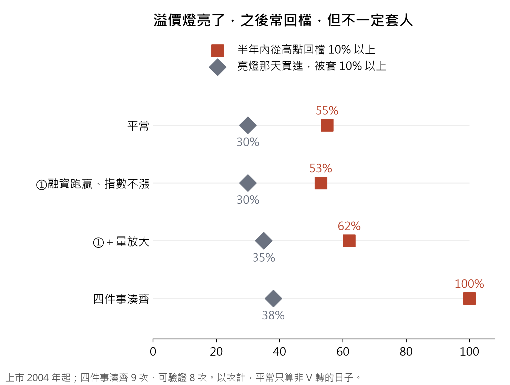
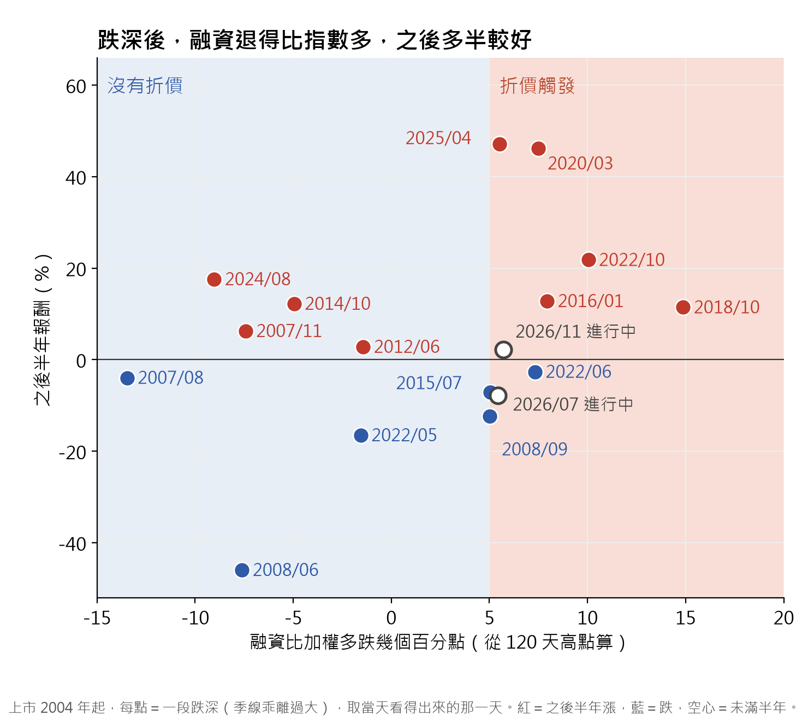

黃莖之亂大跌後，我心裡冒出一句「籌碼很乾淨了」。
講完才發現，我根本沒量過。
所以這篇只做一件事：把「乾淨」跟「過熱」變成看得到的數字。它是溫度計，不是買賣訊號。
先講結論：溢價告訴你「接下來會晃」，折價告訴你「籌碼洗了沒」。兩個都不告訴你明天漲還是跌。
- 溢價：指數不漲，融資卻一直加碼。再加上量放大、季線乖離過熱，四件事湊齊，之後半年 8 次都有 10% 以上的回檔。但如果你在亮燈那天買進，被套 10% 以上的只有 3 次，跟平常差不多。
- 折價：跌深了，融資第一次退得比指數還多。之後半年，8 段裡 5 段上漲，平均 +14.7%。沒出現這個訊號的 7 段，平均 −3.9%。
- 觸發了，不代表到底了。2008、2015 年都是觸發完又跌一段。7/30 那次觸發，到 11/23 還套 7.8%。
- 現在：溢價燈全滅，折價在 11/20 觸發。融資比指數多跌 7.5 個百分點。
- 它量不到的：景氣、利率、消息。上櫃幾乎不適用，上市真正獨立的空頭也只有 6 場左右。
我們常說融資是散戶的溫度計。但溫度計要有刻度，不然只是感覺。
我用的刻度很簡單：融資的漲跌幅，跟指數的漲跌幅比，誰跑得快。
只看百分比，不看「融資除以指數」的水位。加權從 5,000 點漲到 4 萬點，水位跨了年代，根本不能比。

▲ 上市 2004 年起，四件事湊齊 9 次，能看到半年結果的 8 次。紅色方塊是「之後有沒有從高點回檔 10%」，灰色菱形是「亮燈那天買進，有沒有被套 10%」。平常只算急跌後 V 轉以外的日子，跟燈號同口徑。
換個問法：亮燈那天買進的人，真的被套了嗎？
大多沒有。因為它常常先漲一段才跌。2024 年 4 月、2025 年 11 月、2026 年 3 月亮燈之後，加權又漲了兩成五到四成。
所以溢價燈亮的時候，我們該做的不是快逃，是知道接下來會晃，晃的時候別被嚇下車。或是先做好應變計畫。

▲ 每一點是一段跌深，取「當天就看得出來」的那一天：有觸發的段取第一次觸發日，沒觸發的段取該段第一天。紅點是之後半年漲，藍點是跌，空心點還沒滿半年。
這張圖我改過一次。
第一版算出來，8 段全部上漲。後來被抓到：我每段取的是「跌最深的那一天」。那一天，要等整段走完才知道是哪天。
事後只有一個答案，當下有很多個。我差點又拿事後的答案，假裝當下看得到。
改成當下就看得出來的那天，8 段全漲變成 5 段：
| 觸發日 | 融資多跌 | 之後半年 |
|---|---|---|
| 2008-09-16 | 5.0 點 | −12.3% |
| 2015-07-09 | 5.0 點 | −7.1% |
| 2016-01-07 | 7.9 點 | +12.8% |
| 2018-10-11 | 14.9 點 | +11.4% |
| 2020-03-19 | 7.5 點 | +46.2% |
| 2022-06-30 | 7.3 點 | −2.6% |
| 2022-10-11 | 10.0 點 | +21.8% |
| 2025-04-09 | 5.5 點 | +47.1% |
| 2026-07-30 | 5.4 點 | 進行中 −7.8% |
| 2026-11-20 | 5.7 點 | 這次 |
失敗的那幾次，2008、2015、2022 年中，都是景氣或利率的空頭，跌勢還沒走完。
融資只能告訴你籌碼洗了沒，告訴不了你公司壞了沒。後面那題，還是要自己回答。
| 量什麼 | 現在 | 狀態 |
|---|---|---|
| 融資 vs 加權 20 天 | 融資少 11.5 點 | 溢價沒亮 |
| 季線乖離 | 2001 年來最深 1% | 跌深 |
| 從 120 天高點算 | 融資多跌 7.5 點 | 折價觸發 |
| 上櫃 | 融資多跌 3.9 點 | 還沒觸發 |
看到「觸發」，如果景氣沒有衰退，這是值得認真看的位置。
但還有三件事要記得。融資通常比指數晚落底，大約晚 20 個交易日；11/20 到 11/23 指數在彈，融資還在減。觸發之後又跌一段的，歷史上有 3 次。上一次觸發是 7/30，到現在還沒賺錢。
溢價那一半，我請 Grok 跟 Gemini 各自找碴。被抓到的：我從「亮燈後的高點」量回檔，數字好看，但跟買進的人沒關係。
折價那一半，Grok 抓到我拿「跌最深那天」當代表，事後才知道的事。
兩次都是同一個毛病：拿結果去挑點。下次的條件很簡單：只用當天看得到的資料。
更短的心法、方法與盤感，我寫在粉專，入口在這裡：德克 mur mur 粉專。
資料與限制。上市融資：FinMind；上櫃融資、櫃買指數、上櫃成交值：櫃買中心；上市成交值：證交所；加權：yfinance。資料到 2026-11-23。季線乖離以過去 3 年標準化；「回檔」指之後半年內從期間高點的最大跌幅，「被套」指相對亮燈當天收盤的最大跌幅；以獨立次數計，相隔 20 個交易日以上才算新的一次。門檻是看過資料後選的，樣本小。
本文只整理資料與推論，不是投資建議。
德克 mur mur｜研究整理，不構成任何投資建議。資料來源與限制見文末。